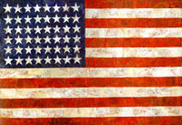
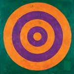
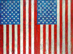
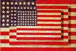
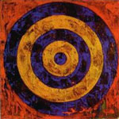

Tautology
Tautology  Concept
Art
Concept
Art  Radical Art
Radical Art
 Tautology
Tautology  Concept
Art
Concept
Art  Radical Art
Radical Art
|  Flag, 1954-55
 Target, 1969 |
Flag above white collage, 1955
 Two Flags (in six parts), 1973 |
 Three Flags, 1958  Target, 1974 |
|